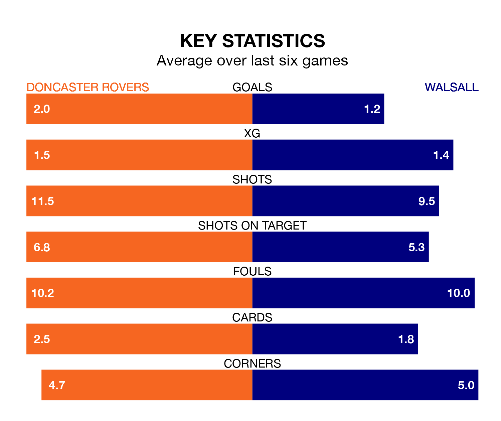

Doncaster Rovers host Walsall at the Eco-Power Stadium on late Tuesday on the back of six consecutive wins in EFL League Two.
It means Doncaster have picked up the maximum 18 points from their last six games, and they face a Saddlers side who have also won their last two matches, and collected eight points from the last possible 18.
In the last 10 years, Doncaster and Walsall have played each other on 12 occasions. Doncaster won two of them, Walsall nine, and they drew once.
On average, the Rovers scored 1.0 goal and the Saddlers 2.1 in those matches.
Their last meeting was on March 2, when Walsall won 3-1 at home.
With 57 goals in 41 games so far this season, Doncaster are scoring at below the league average rate with 1.4 goals per game. And they are conceding at an average rate, letting in 62 goals at a rate of 1.5 per game.
Walsall, meanwhile, are average scorers, with 1.5 goals per game. They have conceded 1.4 goals per game.
The Saddlers are ninth in the table after 41 games, of which they have won 17 and drawn 11, earning 62 points.
Rovers are three places behind the away team in 12th, with 17 wins and seven draws putting them on 58 points.
Walsall's Isaac Hutchinson is among the league's most creative players, racking up nine assists in 41 appearances so far this season, and holding fourth spot in EFL League Two's assist charts.
For the Rovers, Luke Molyneux, Joe Ironside and Hakeem Adelakun have set up the most goals, having laid on five assists apiece to date.
Doncaster's last match was on Saturday, a 3-0 win against Morecambe, with Molyneux (two) and Tommy Rowe getting the goals for the Rovers.
Walsall beat Tranmere Rovers 3-1 last time out, also on Saturday, with Brandon Comley, Jamille Matt and Taylor Allen on the scoresheet.
Updated: 11:20 (UTC), 09/04/24